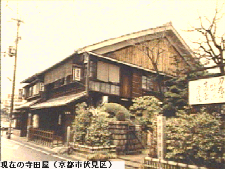

-
寺田屋事件
1862(文久2)年4月23日，京都近郊の伏見の寺田屋で，薩摩藩尊攘派志士が殺害された出来事です。
当時上洛中の島津久光の意図は雄藩連合・公武合体にありましたが，藩士有馬新七らはこれを機に挙兵討幕を企て，関白九条尚忠，京都所司代酒井忠義の殺害を計画して寺田屋に集結しました。
これを知った久光は鎮撫のため，奈良原喜八郎ら9人を派遣したところ，両者は激しい論争ののち乱闘に及び，有馬ら6人は倒れました。
この乱闘は討つ者も討たれる者も同じ薩摩藩士でした。なお，若年の大山巌，三島通庸，西郷従道，篠原国幹など明治の元勲も参加していました。
出典：鹿児島県公式ホームページ
https://www.pref.kagoshima.jp/ab23/pr/gaiyou/rekishi/bakumatu/teradaya.html